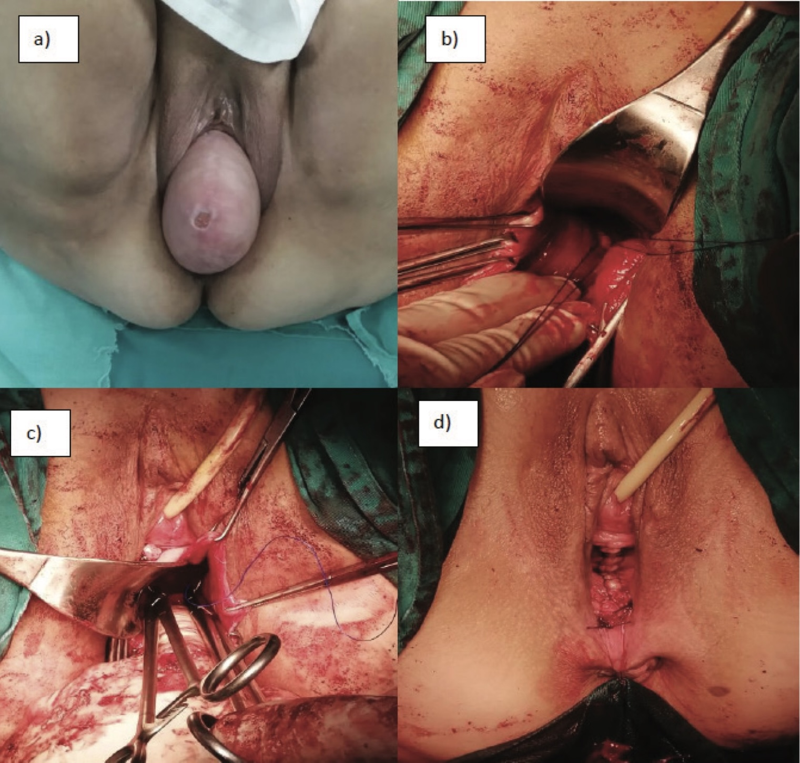

Página 6 · Prolapsos / distopia genital
A cúpula que desce depois: a bola na vagina pós-histerectomia
Tirou o útero, fixou a cúpula — e mesmo assim ela voltou ao consultório com “uma bola na vagina”. De onde veio essa bola, e onde se reancora o topo que perdeu o suporte?
Por que a cúpula desce mesmo tendo sido fixada
Ao retirar o útero, perde-se a sustentação que ele dava ao topo da vagina. Fixar a cúpula na histerectomia ajuda muito — mas às vezes, mesmo fixada, ela cede depois. É o preço de remover a âncora natural do ápice: o suporte artificial nem sempre segura para sempre, e o topo pode voltar a descer com o tempo.
A história clássica: bola na vagina pós-histerectomia = prolapso de cúpula
O quadro é tão típico que a banca o usa como gatilho pronto: paciente pós-histerectomia volta ao consultório queixando-se de “uma bola na vagina”. É a cúpula que desceu — desceu tudo o que restava do topo — e isso é o prolapso de cúpula. Diante de “bola na vagina” + antecedente de histerectomia, o diagnóstico já está quase escrito.
Fixar no sacro: sacrocolpopexia/promontofixação ou ligamento sacroespinhoso
O tratamento cirúrgico é fixar a cúpula no sacro, reancorando o topo que perdeu suporte. Há dois pontos de fixação: o promontório sacral — a sacrocolpopexia (ou promontofixação), tipicamente abdominal/laparoscópica, com tela, de maior durabilidade — ou o ligamento sacroespinhoso — a fixação sacroespinhosa, por via vaginal, com tecido nativo, menos invasiva. A ideia das duas é a mesma: ancorar atrás, no sacro, refazendo o ângulo da vagina.
No alto risco: Le Fort ou pessário — e a tela que NÃO é a banida
Se a paciente é de alto risco, as saídas conservadoras valem aqui — e a colpocleise (Le Fort) é até mais provável neste cenário, porque a paciente já passou por uma cirurgia e muitas vezes já era de alto risco (desde que idosa e sem vida sexual ativa). Ou o pessário, que serve para qualquer distopia. Um alerta de segurança que a banca de hospital top cobra: a tela da sacrocolpopexia/promontofixação aqui é abdominal e permanece padrão-ouro para o prolapso de cúpula — ela não é a tela transvaginal que foi restringida para POP (esse aviso é de outro contexto, o da correção anterior por via vaginal). Não confundir a tela do promontório com a tela transvaginal banida.

O achado é a eversão da cúpula vaginal (painel a), sem útero — a “bola” do prolapso de cúpula. Os demais painéis mostram fixação sacroespinhosa (reparo vaginal, tecido nativo): não é a sacrocolpopexia abdominal com tela, nem a tela transvaginal restringida — não conflar.
Adaptado de Pantović S et al. Serbian Medical Journal (SMJ). 2024;5(4). Licenciado sob CC BY 4.0. Fonte: smj.rs.
real de achado — cúpula (sem útero); painéis cirúrgicos = fixação sacroespinhosa, não telaMapa do assoalhoFecha a coluna apical do mapa: promontório sacral / ligamento sacroespinhoso = os pontos de fixação da cúpula quando não há mais útero.
Quiz — fixação
Mulher de 68 anos, histerectomizada há 6 anos, queixa-se de “uma bola na vagina”. O diagnóstico e a correção cirúrgica de referência são:
- B — a virada. Bola na vagina + histerectomia prévia = prolapso de cúpula; a correção reancora o topo no sacro.
- A. sem útero não há prolapso uterino nem o que histerectomizar.
- C. cistocele é parede anterior/bexiga — a queixa aqui é do ápice.
- D. enterocele é intestino delgado pelo fundo de saco; embora apical, o quadro-gatilho descrito (bola pós-histerectomia) é a cúpula.
- Por que cair. “prolapso + topo” evoca “útero” no reflexo — mas o antecedente de histerectomia redefine o compartimento.
Sobre a tela (mesh) no tratamento do prolapso, é correto:
- B — a virada. São telas diferentes: a abdominal do promontório segue padrão-ouro para a cúpula; a transvaginal para POP é a restringida.
- A. é exatamente a conflação a evitar — confundir as duas é erro clínico.
- C. exagera: a restrição é específica da transvaginal para POP, não de toda tela.
- D. a tela na cistocele é reservada à recidiva, nunca 1ª linha.
- Por que cair. a palavra “tela” ativa o alarme genérico, mas via de acesso e indicação separam as duas.
Fechado o ápice, desce-se um andar: a cistocele do compartimento anterior guarda uma sutileza que a banca detalhista adora — duas cistoceles que se parecem, mas mudam a cirurgia.